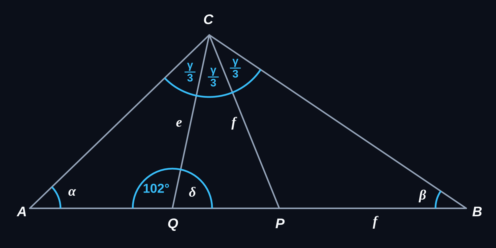
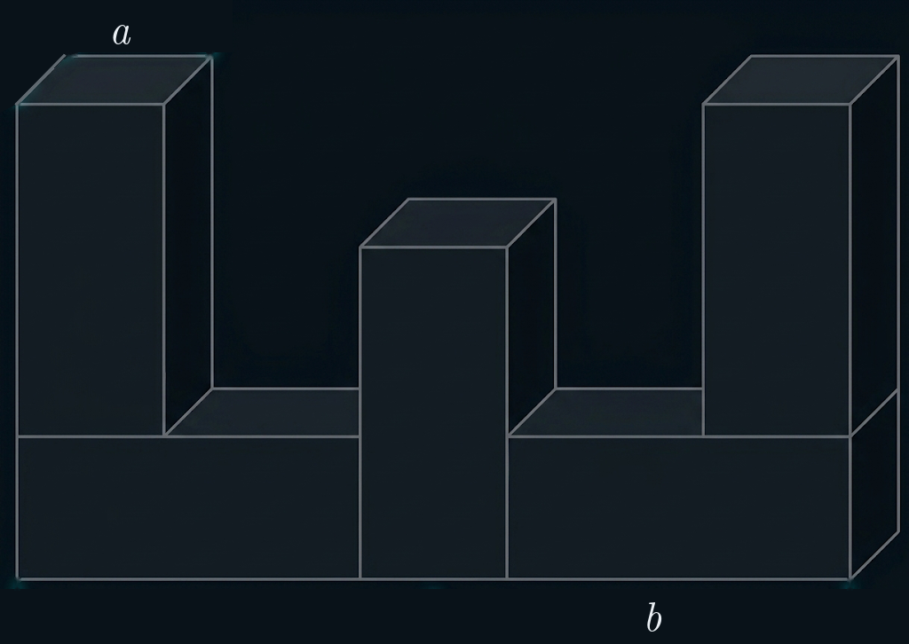

Sári néni egy nagy hordóba gyűjti az esővizet, amellyel a kertet locsolja. Kora reggel a hordó tartalmának harmadát és még 4 liter vizet használt el locsolásra. Délután a maradék víz felét és még 10 liter vizet öntött a virágaira. Este a hordóban maradt víz felét és még 5 liter vizet locsolt a kis almafa tövére. Így éppen 10 liter víz maradt a hordóban.
a) Hány liter esővíz volt eredetileg a hordóban? Írd le a számolás menetét is!
Eredetileg ………………… liter esővíz volt a hordóban.
A feladat megoldása lépésről lépésre (visszafelé következtetéssel):
Az alábbi ábrán az e és f szakasz az ABC háromszög C csúcsánál lévő belső szöget harmadolja, továbbá CP = PB.
Az ábrán egy szög nagyságát megadtuk. (Az ábra csak tájékoztató jellegű vázlat, nem pontos méretű.)

a) Mekkora a CQP háromszögben a Q csúcsnál lévő δ szög nagysága?
δ = ........
b) Mekkora az ABC háromszögben a B csúcsnál lévő β szög nagysága?
β = ........
c) Mekkora az ABC háromszögben a C csúcsnál lévő γ szög nagysága?
γ = ........
d) Mekkora az ABC háromszögben az A csúcsnál lévő α szög nagysága?
α = ........
A feladat megoldása lépésről lépésre:
Minden kérdés után kattints az egyetlen helyes válasz betűjelére!
a) Ha egy háromszögben van két olyan hegyesszög, amelyeknek az összege 90°, akkor mit állíthatunk biztosan a háromszögről?
b) Adott két lineáris függvény hozzárendelési szabálya: e: y = 3x - 5 és f: y = -2x + 10. Melyik függvény egyenesén van rajta a P(3; 4) pont?
c) Melyik szám a 72 és a 48 legnagyobb közös osztója?
d) Hány darab közös pontja nem lehet egy körvonalnak és egy téglalap határvonalának?
Az alábbi ábrán látható testet öt darab egybevágó négyzetes oszlopból ragasztottuk össze. (A ragasztási felületek teljes négyzetek.)
A négyzetes hasábok éleinek hossza: a = 2 cm, b = 5 cm. (Az ábra csak tájékoztató jellegű vázlat, nem pontos méretű.)

a) Hány cm² az ábrán látható test felszíne? Írd le a számolás menetét is!
Az összeragasztott test felszíne: ............ cm²
Karcsi a barátaival szombaton kerékpározni ment. Amikor megtették a tervezett út 40%-át, megálltak ebédelni. Ebéd után továbbmentek, megállás nélkül megtették a teljes napra tervezett út 3⁄7 részét, és egy forráshoz érkeztek. Innen már csak 6 km-t kellett kerékpározniuk, hogy elérjék tervezett úti céljukat.
a) Hány km-t tettek meg Karcsiék összesen? Írd le a megoldás menetét!
Karcsiék összesen ........... km-t tettek meg.
A feladat megoldása lépésről lépésre: